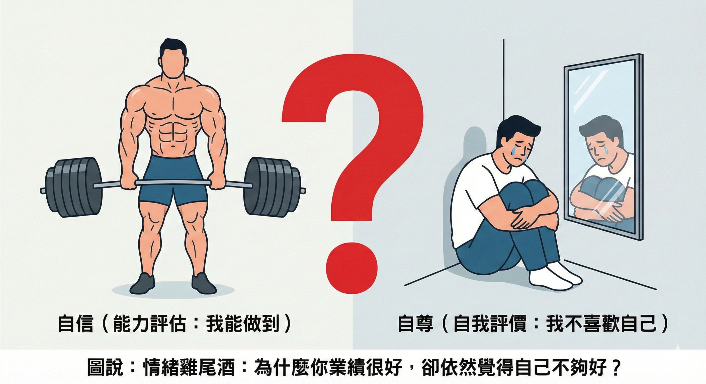
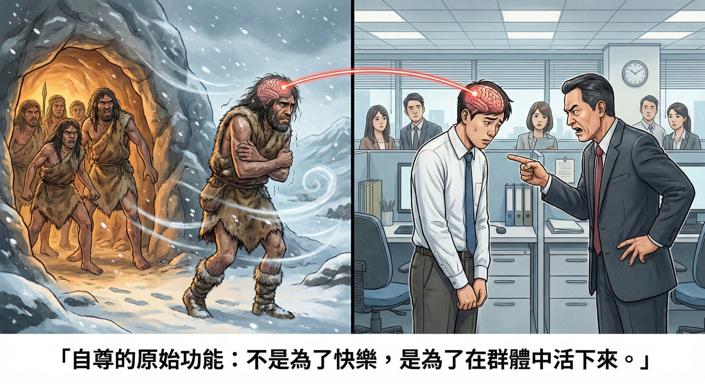
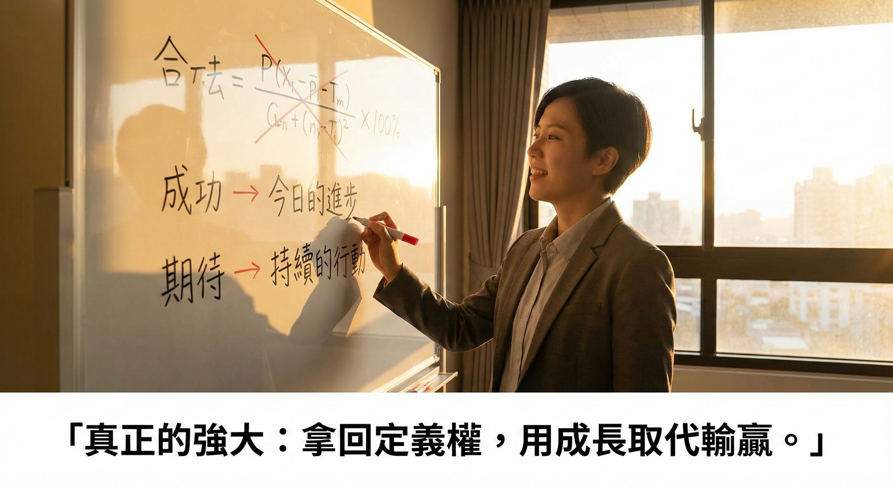

很常有同學問我說：「老師，我真的沒有自信。」
我就直接回答他：
「不要再說你沒自信了，你只是用錯了自尊系統。」
這聽起來很像繞口令？在我們深入談解法之前，必須先釐清兩個常被混淆的概念。我很喜歡「情緒雞尾酒」對於自信及自尊的解釋：
自信：自己對於一件事情能力的評估。
（例如：這張訂單我有沒有把握拿下來？這場演講我能不能講好？）
自尊：自己如何評價自己的感覺，以及感覺多強烈。
（例如：我喜不喜歡現在的自己？我覺得自己有沒有價值？）

看懂了嗎？很多人其實工作能力很強（高自信），但夜深人靜時卻覺得自己一無是處（低自尊）。問題往往不在你的能力，而在你「評價自己」的機制出了問題。
我們從小被教要愛自己，要有自尊，卻從來沒有人真正教過一件事：自尊到底是什麼？它從哪裡來？又為什麼會把人逼到說謊、找藉口，甚至逃避成長？
答案其實很簡單，因為自尊，從來就不是為了讓你快樂而存在的。
一、自尊的原始功能不是快樂，是活下來
如果你把時間拉回遠古時代，人類是群居動物。那個年代沒有公司，沒有履歷，也沒有心理諮商，只有一件事最重要：
被群體接納，代表可以活下來被群體排擠，代表走向死亡

於是，大腦演化出一套系統，專門監控一件事：「我現在，是不是還有價值？」這套系統，就是我們今天說的自尊。
所以當你感覺到羞愧、自責、覺得自己不如人，那不是你太玻璃心，而是你的大腦在拉警報。
這也解釋了為什麼人一犯錯，第一反應往往不是檢討，而是防衛。心理學把這種防衛稱為「認知失調」。
說出「不是我的錯」、「是環境不好」、「是你在針對我」，表面看起來是狡辯，但本質其實只有一件事：我不能承認我不行，因為在基因裡，那等於被放逐。
於是我們開始戴上面具，硬撐自尊。但代價是什麼？你撐住了面子，卻關掉了成長的入口。
二、真正該改的不是你，是自尊公式
心理學之父威廉．詹姆士曾經提出過一個很關鍵的自尊公式，我把它整理成一看就懂的版本：
自尊 = 成功 / 期待感
多數人一輩子，從來沒有定義過這兩個東西，因而卡在錯誤模式裡：
成功，由別人定義：賺多少錢、開什麼車、幾歲當主管就代表成功。
期待感，由他人評價而驅動：不能輸、不能失敗、不能被看不起。
結果會怎樣？成功的標準永遠追不完，期待的門檻卻被自己不斷拉高。數學很誠實，當分母愈來愈大，自尊只會愈來愈低。
所以你會發現一件事：你不是不努力，而是愈努力，愈覺得自己不夠。
能讓人翻轉一生的正確模式
真正成熟的人，會做一件很關鍵的事：把定義權拿回來。
成功，由自己定義：不是贏過誰，而是今天有沒有比昨天多學到一點。
期待感，由理性管理：不是期待完美，而是期待自己持續行動，持續修正，結果隨他。
當你這樣改公式，自尊會出現一個很重要的轉變：它不再需要靠面子撐住，而是靠累積站得住。
三、為什麼想要有好的自尊，必須先有成長型思維
很多人把因果關係完全顛倒了。他們以為我要先很有自信，我才敢嘗試、我才做得到成長型思維。
但事實正好相反：不是因為你自尊高，所以你能成長；而是因為你先選擇成長，你才救得回自尊。
如果你沒有成長型思維，你的公式是鎖死的。你只能用他人的評價來定義成功，用結果的輸贏來衡量自己的價值。在這種舊思維裡，失敗不只是一次經驗，而是對人格的否定。
只有當你先安裝了成長型思維，你才有能力修改公式裡的參數，把成功的定義與期待的焦點，從「贏過別人」轉成「自我的收獲」；從「他人的評價」轉回「自我成長」。
只要學到了，即使結果不理想，成功的累積依然存在。不再期待別人拍手，而是期待自己持續進化。
到了這個階段，你才會感到真正的安全。不是因為你已經很強，而是因為你不再害怕犯錯。
這就是為什麼，我們必須先練習成長型思維，才能從根本上修復一個人的自尊系統。

真正的自尊，來自承諾，不是掌聲
真正的自尊，不是覺得自己完美無缺，而是你很清楚一件事：就算現在還不夠好，我也沒有逃避。
當你理解了自尊背後的生存機制，又透過成長型思維，拿回了成功與期待的定義權，你會發現，你不再需要靠面子活著，你開始靠實力與累積站穩。
到最後，你會很平靜地對自己說一句話：「太好了，這一次又多一個地方，可以讓我變強。」
『真正的強大，不是從不失誤，而是擁有不斷修正的勇氣。』
🔧 你的業績卡住了嗎？因為我也走過那段「心累」的路，所以我懂你的痛。如果你想知道...你的「業務原廠設定」是適合開發還是穩定成長？你容易卡在「開發」、「開口」還是「成交」？👇 點擊連結加入 LINE私訊「想知道銷售天賦」，15分鐘幫你找到業務專屬天賦!https://line.me/ti/p/jzdho94spl
Instagram：eintaixin
個人官網